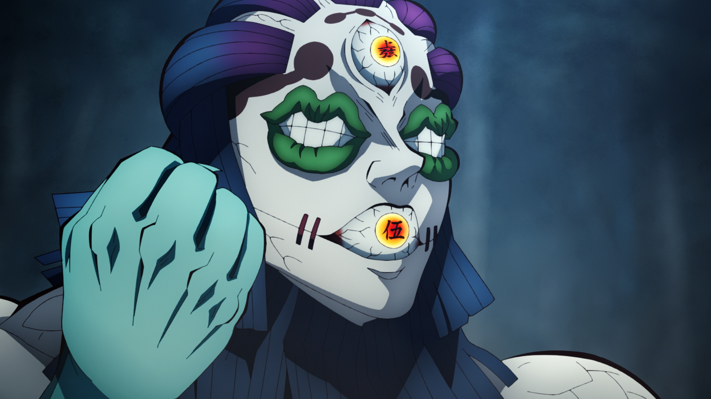
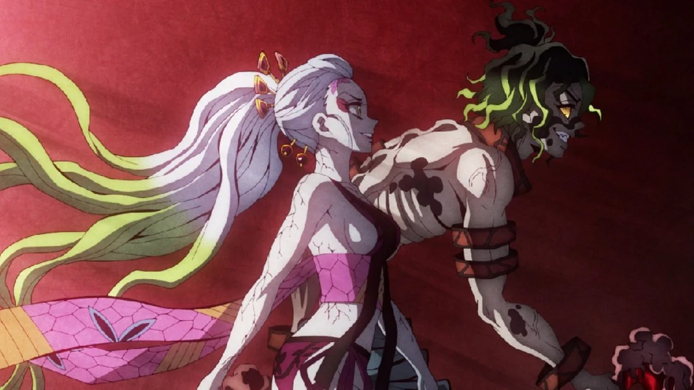

1° Superior Kokushibo
Antigamente conhecido como Michikatsu Tsugikuni, Kokushibo era um caçador de onis altamente respeitado, pertencente a Era Sengoku, sendo um dos primeiros existentes, e o irmão mais velho de
Yoriichi Tsugikuni. Invejava as habilidades de seu irmão e se tornou um demônio para superar Yoriichi. Atualmente é é um dos mais
poderosos e antigos demônios, sua força é tão grande que Muzan rechoce ele como um parceiro de negócios e não apenas um simples
peão. Ele usa a técnica de Respiração da Lua, uma variação da Respiração do Sol, como ele passou mais de 400 anos desenvolvendo-a,
essa respiração se tornou a com mais formas da história, possuindo 16 formas, e a segunda mais forte. Kokushibo é conhecido por
suas habilidades excepcionais com sua espada, feita de sua própria carne, e sua imensa força.
Idade: +400
Altura: 190cm
Técnica: Respiração da Lua e Kekkijutsu
Motivações: Desejo de poder e inveja de seu irmão, procurando superar Yoriichi e alcançar maior força.
2° Superior Douma

Doma foi transformado em demônio há cerca de 110 anos. Mesmo antes disso, era cruel e manipulador, não tendo sentimento, o que fez
com que ele apenas os fingisse, característica que continuou após a transformação. Ele possui um culto, muitos humanos acreditam
que ele seja um hemissário divino por possuir diversas cores em seus olhos, aproveitando-se da inocência de seus fiéis e se
alimentando deles constantemente. Douma é um demônio que se alimenta principalmente de mulheres, por esse e mais alguns motivos
Muzan não gosta dele e o mataria se pudesse, porém Douma é forte e ele não perderia um soldado assim. Utilizando suas habilidades
de gelo para torturar suas vítimas, ele consegue criar um ambiente onde seu pulmão é congelado, sendo mortal para humanos, acerca
de que também possui a capacidade de criar estátuas de gele super poderosas e clones com a mesma força que ele. Seu ataque mais
forte são as estátuas de gelo budistas. Possui uma relação de amizade apenas por parte dele com Akaza e uma de ódio com a Shinobu,
por ser o responsável pela morte da irmã dela, a antiga Hashira das Flores, Kanae Kocho.
Idade: 130
Altura: 187cm
Técnica: Kekkijutsu de gelo
Motivações: Busca por poder e imortalidade, absorvendo a energia vital das pessoas para se fortalecer.
3° Superior Akaza

Akaza, anteriormente conhecido como Hakuji, era um lutador criminoso que roubava diversas lojas para salvar seu pai, que acabou
se suicidando. Foi acolhido por um homem dono de Dojo e criou um laço de amor com a fliha dele, prometendo que se casariam,
entretanto ambos foram mortos envenados pelo Dojo vizinho, fazendo com que Hakuji matasse 67 pessoas com a mão limpa, despertando
o interesse de Muzan e sendo transformado em oni. A partir desse momento ele busca se tornar o mais forte, sendo o único que saiu
vivo após desafiar Kokushibo para uma batalha. Possui um ódio imenso por Douma, pelo sua personaliade, por ele jogar na cara de
Akaza que foi tranformado depois, mas mesmo assim é mais forte que ele e principalmente pelo fato de repugnar ele devorar
majoritariamente mulheres. Akaza é um dos favoritos de Muzan e tem uma permissão especial para não machucar nem devorar mulheres,
pois acredita que elas devem ser protegidas, entretando odeia pessoas fracas e otimistas. Ele é conhecido por sua habilidade de
combate corpo a corpo, que pode prever os movimentos do oponente e atrae eles até si, facilitando na hora de matar, justamente
por isso está em busca constante por adversários fortes.
Idade: 130
Altura: 173cm
Técnica: Kekkijutsu Jutsushiki tenkai
Motivações: Desejo de desafiar adversários poderosos e se tornar mais forte através de batalhas.
4° Superior Hantengu
Hantengu era um assassino que botava a culpa nos outros, sendo morto e tranformado. Hantengu tem a capacidade de criar múltiplas
cópias de si mesmo, até certo limite, toda vez que possui a cabeça cortado, cada uma com uma personalidade e habilidades distintas,
sendo ele mesmo a emoção do medo e o corpo principal do Oni, sendo necessário apenas ele ser decapitado, as outras emoções são
Alegria(voar, grito sônico), Prazer(rajadas de vento), Tristeza(lâminas energéticas) e Raiva(Relâmpago). Caso essas emoções não
deêm conta, eles se juntaram em uma só para proteger o medo, o ódio que possui todas as outras habilidades e ainda a capacidade
de controlar dragões de madeira enormes que podem usar os poderes de forma mais potente. Nos últimos casos a emoção da angústia
aparecera, sendo um escudo para proteger o pescoço do medo. Ele usa essas múltiplas formas para confundir e atacar seus inimigos
de maneiras variadas. Hantengu é conhecido por sua covardia e traição, usando suas habilidades para proteger-se e atacar de forma
traiçoeira.
Idade: +200
Altura: 166cm
Técnica: Kekkijutsu das emoções
Motivações: Desejo de se proteger e sobreviver, utilizando suas múltiplas formas para enganar e atacar de maneira astuta.
4° Superior Nakime
Nakime é a lua 4 substituta. Era uma musicista que tocava em casas de show para ganhar a vida, porém o homem com quem se casou era viciado em jogos de azar e gastou
tudo o que ela tinha ganho, ela o confrontou e ele a ameaçou, mas quem estava em apuros era ele, Nakime matou-o com um martelo, indo
apresentar logo em seguida, porém sem roupas boas e com o sangue na consiência ela não performou direito, sendo vaiada e saindo correndo
dali, até que ouve alguém batendo palma e pedindo bis, esse era Muzan transformando-a em Oni. Ela possui a habilidade de manipular
a estrutura do espaço através do poder de seu sangue demoníaco. Ela pode criar labirintos e alterar o ambiente ao seu redor,
tornando-a uma adversária difícil de enfrentar. Nakime é uma demônia inteligente e perigosa, que usa suas habilidades para criar
armadilhas e desafios mortais para seus inimigos.
Idade: +-130
Altura: Desconhecida
Técnica: Kekkijutsu do Biwa
Motivações: Criar caos e confundir seus adversários, usando suas habilidades para controlar o ambiente e
manter-se segura em combate e orgulhar Muzan.
5° Superior Gyokko

Gyoko um homem sádico que gostava de ver sangue e via como arte, transformando-se em one. Era um demônio cruel que possuía
habilidades relacionadas à manipulação de água. Ele tem uma aparência grotesca e pode criar ataques baseados em água, o que o
torna um adversário perigoso e imprevisível. Gyoko é conhecido por sua natureza calculista e seu desejo de causar sofrimento.
Quando ameaçado ele se tranforma em uma espécie de oni meio homem e meio peixe, nessa forma ele possui um ataque muito forte,
que faz com tudo que ele toque vire peixes.
Idade: +113
Altura: 150 normal e 170 tranformado
Técnica: Kekkijutsu do vaso
Motivações: Causar sofrimento e manter seu poder. Sua crueldade é evidente em suas ações e em
seu desejo de manipular e torturar suas vítimas.
6° Superior Daki e Gyutaro

Daki e Gyutaro são irmãos, nascidos no distrito do entretenimentos, onde a beleza pe muita importante. Gyutaro desde que nasceu
era horrível e desprezado por todos, até o momento em que sua irmã nasceu, Ume, ela era linda e ele sentia muito orgulho delha.
Com o passar dos anos eles foram crescendo e Ume começou a trabalhar como Oiran, enquanto Gyutaro cobrava o serviço. Um dia Ume
escutou um homem falando mal de seu irmão, então ela decidiu furar o olho dele com um alfinete, em resposta ela foi tacada na
fogueira e queimada viva, quando Gyutaro que tinha saido viu o que aocnteceu, ficou desesperado e matou todos, após começou a
andar com sua irmã no colo pela cidade, até encontrarem com Douma, na época Lua Superior 6, que decidiu ajudar os irmãos apenas
para tentar fingir que se importava, tranformando-os. Gyutaro era um demônio cruel que lutava por sobrevivência e poder. Ele
possui habilidades de combate corpo a corpo e utiliza suas técnicas ofensivas brutais, com foices feitas de sua carne e veneno
feito de seu sangue. Daki pode criar e manipular faixas para atacar suas vítimas. Ela tem uma personalidade dominante e busca
poder para estabelecer seu domínio. Ambos juntos mataram mais de 25 hashiras e uma curiosidade é que para serem mortos devem ter
a cabeça cortada ao mesmo tempo. Muzan odeia Daki e diz que ela é fraca pelas costas delas, que se não fosse por ela o Gyutaro já
estaria mais alto no ranking.
Idade: 120 e 113
Altura: Provavelmente 1,95 e 1,70cm
Técnica: Kekkijutsu do veneno e das faixas
Motivações: Causar sofrimento e manter seu poder. Sua crueldade é evidente em suas ações e em
seu desejo de manipular e torturar suas vítimas.
6° Superior Kaigaku
Kaigaku era um ex-aluno de Gyomei Himejima e foi transformado em demônio por Kokushibo, após ter dado de cara com ele e implorado
para não morrer. Ele usa a técnica de Respiração do Trovão, semelhante à de Zenitsu Agatsuma, mas com uma abordagem mais brutal.
Kaigaku é conhecido por sua crueldade e busca constante por poder, tentando se provar superior aos outros.
Idade: 19
Altura:1,67
Técnica: Respiração do trovão e Kekkijutsu.
Motivações: Buscar poder e reconhecimento, e sua crueldade é um reflexo de seu desejo de se destacar e demonstrar sua força.